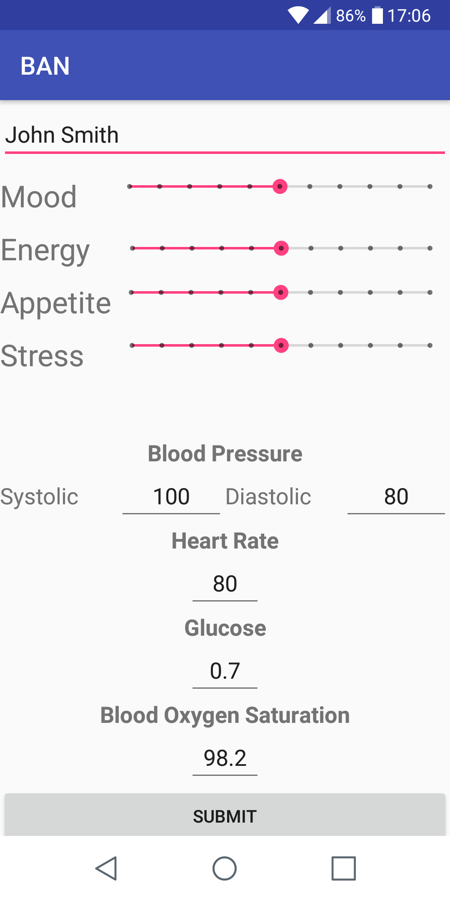
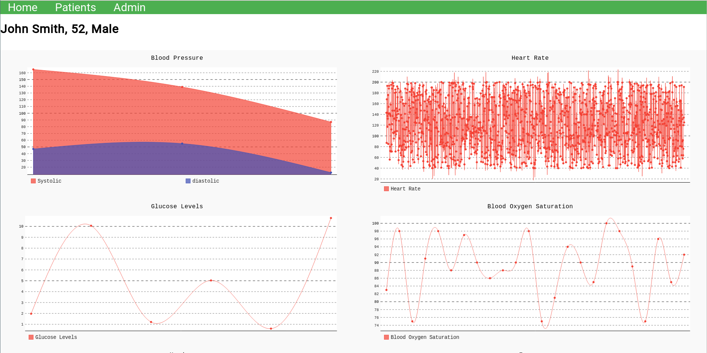

Below is a complete literature review on the current sensors which would be usable in a Medical Body Area Network
A basic Android application was made, it incorporates psychometric measurement and sending body parameter values, the app does not communicate with physical sensors so the user must manually input the values. Physical sensors can be added however with no major alterations required as the data is sent in JSON format. With the creation of the Android app the back-end of the web application had to be modified to accept the data and display it. Additional modifications to the web application included more statistics on the patient data, migrating to mysql as a central database for multiple instances to communicate with, a revised home page, a research section with each weeks google docs embedded with summaries and general user experience / design improvements.
This complete the work on the proof of concept system for the Gold Coast University Hospital and I am very happy with the final result. In order for system to be usable in the real world some modifications and additions are of course required, this includes; user authentication, encrypted communication between the Android and web applications, development of an iOS app, integration between sensors and the mobile apps, improved user interface - interactive graphs (zoom, seek, etc.) and I am sure there is much more.
I spent the entire weekend building the majority of the back-end and most of the front-end for the web application resulting in a functioning prototype and with my minimal HTML and CSS skills surprisingly making it look decent. I even containerized the web application and had multiple instances running behind a load balancer I built using Nginx. The only issue was that I was using sqlite for my database, each instance had its own database so there was no cross communication between the web application instances. The load balancing technique used is round robin so the user would never directly see the result of their actions.
As the majority of the research on wearable sensors had been completed and just passing the half way mark of my research period, I started compiling my previous weeks research into a more formal literature review (found at the top of the page) and developed a highly scalable, robust system design for the Gold Coast University Hospital.
Instead of just looking at sensors which are currently commercially available, time went into looking at both academic research on sensors as well as published patents.
A meeting was held with Chris from the psychiatric unit which gave insight into what a MBAN could do to improve patient treatment. His idea for this research project was to perform a literature survey on the current sensors both available on the market and research prototypes and secondly create a proof of concept system to aid in the treatment of depression. The patients would be wearing sensors which continuously monitor their body parameters, send this data to their mobile phone and onto a server. The phone application would also have psychometric monitoring built in e.g. happiness levels, stress, etc. as well as any other body parameters which are not continuously monitored such as weight. Analysis can then be done on this data by a doctor or even by AI, as a result it is possible that patient treatment duration will decrease and therefore reduce the strain on the hospital. Further research on sensors was done, a comparison between the two major wireless communication protocols Bluetooth 4 and ANT+, and a a system model was developed.
It was decided that the focus of this research would be on Medical Body Area Networks (MBAN). This lead to determining what body parameters should be measured, available and prototype sensors and the difficulty surrounding using existing bluetooth based wireless sensors.
What is a BAN? What are the use cases? What commercial products are available? What are the attack vectors?